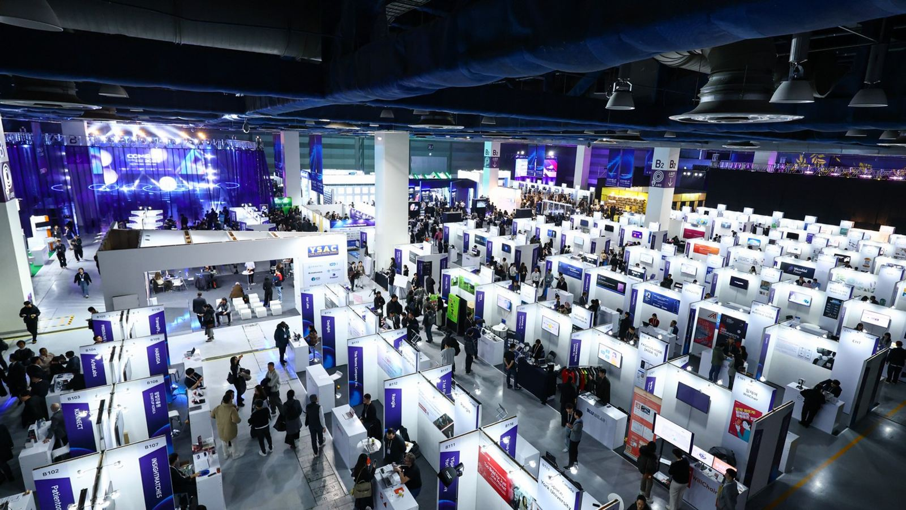

Conferences · Tech
COMEUP 2026 (Global Startup Festival)
- Dates
- –
- Venue
- COEX (Hall C, 3F)
- Location
- Seoul, South Korea
- Format
- Hybrid
- Category
- Tech
- Industry
- Startups / venture
- Organiser
- Ministry of SMEs and Startups (중소벤처기업부)
- Official website
- https://www.comeup.org/about
About
Dates are local to the host city (Korea Standard Time, UTC+9).
Topics: startups, AI, deep tech, investment, open innovation.
No organiser attendance figure found on the official pages fetched 24 Nov 2026. Ranked by our estimated size tier 'medium' (10,000-30,000 attendees/visits), a judgement from format, venue and scale, not an official number.
Sources
- Official — https://www.comeup.org/about
Venue
- COEX — Convention centre · 513 Yeongdong-daero, Gangnam-gu, Seoul 06164, South Korea · 7,000 capacity